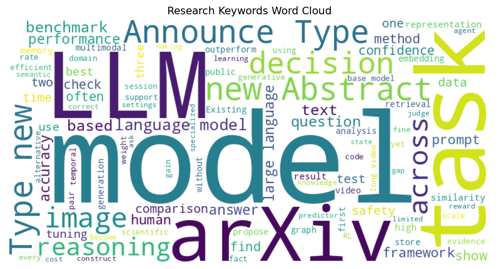

Salil Bhatnagar
Thu,
arXiv:2611.33232v1 Announce Type: new Abstract: Reinforcement learning (RL) on a reward that can be checked automatically has become a common last step in the training of text-to-image models. A simp...
Jingzhi Gong, Jie M. Zhang
Thu,
arXiv:2611.33190v1 Announce Type: new Abstract: AI configuration tuning searches for settings that improve the performance of AI systems under a limited budget. Existing tuners use different sampling...
Siyuan Chen, Yuping Gao, Tai Huang, Yuling Zhou, Dongyu Su, Tongguan Wang
Thu,
arXiv:2611.33563v1 Announce Type: new Abstract: Automated Scientific Hypothesis Generation (ASHG) leveraging large language models (LLMs) aims to harness their strengths in knowledge integration, log...
Ce Zhang, Baiqi Li, Seongsu Ha, Gedas Bertasius
Thu,
arXiv:2611.33368v1 Announce Type: new Abstract: Understanding ultra-long videos requires retrieving sparse, query-relevant evidence from extensive video histories. Existing similarity-based retrieval...
Damba Kon\'e, Sara Mobsite, Joris Gu\'erin, \'Elodie Blanchard, Thibault Catry
Thu,
arXiv:2611.33369v1 Announce Type: new Abstract: Mangroves are dynamic coastal ecosystems that contribute to carbon storage, coastal protection and biodiversity conservation, but are vulnerable to cli...
Saksham Gupta, Yash Choudhary, Arpit Upadhyay
Thu,
arXiv:2611.33184v1 Announce Type: new Abstract: Persistent textual memory can improve LLM agents, but repeated updates can erode task performance. We ask whether memory-store statistics warn before h...
Jiechen Li, Hannah Groos, Brinnae Bent
Thu,
arXiv:2611.33594v1 Announce Type: new Abstract: Embedding models increasingly inform how people search, recommend, and retrieve information, yet we lack credible ways to test whether these similarity...
Jeremy Canale
Thu,
arXiv:2611.33470v1 Announce Type: new Abstract: We present an end-to-end empirical study of dynamic reasoning in next-generation detection and response pipelines, evaluating how static classifiers, g...
Junhong Huang, Xin Tong, Jun Xia
Thu,
arXiv:2611.33174v1 Announce Type: new Abstract: Long-horizon Large Language Model (LLM) agents need persistent memory that surfaces the right past interaction at the right time across thousands of tu...
Luiz G. A. Alves, Aaron Vermeersch
Thu,
arXiv:2611.33394v1 Announce Type: new Abstract: AI agents built on large language models (LLMs) demonstrate strong capabilities in automated decision-making. However, LLMs may produce incorrect answe...
Ali Asgarov, Chris Thomas
Thu,
arXiv:2611.33339v1 Announce Type: new Abstract: A surgeon first finds what is wrong, then fixes only that part. We use this idea for video grounding, where video-language models often find the right ...
Auss Abbood, Zihao Fu, Nigel Collier
Thu,
arXiv:2611.33176v1 Announce Type: new Abstract: Studies of time perception in language models focus mainly on text-based settings. Yet multimodal models are increasingly used for tasks that require p...
Arushi Gupta, Sheng Liu, James Zou
Thu,
arXiv:2611.33197v1 Announce Type: new Abstract: Cognitive Load Theory (CLT) shows that human problem-solving is affected by both intrinsic load, arising from task difficulty, and extraneous load, ari...
Chengying She, Siyu Deng, Haiyan Ge, Lizhuang Liu
Thu,
arXiv:2611.33210v1 Announce Type: new Abstract: Large language models (LLMs) are increasingly used for biomedical question answering, but plausible incorrect answers remain a safety risk in clinical ...
H. Sherry Zhang, Roger D. Peng
Thu,
arXiv:2611.33167v1 Announce Type: new Abstract: A data analysis involves a sequence of decisions, from data cleaning to model specification, each of which can affect the reported result. Reproducing ...
Maximus Adeola
Thu,
arXiv:2611.33250v1 Announce Type: new Abstract: Text embedding models can conflate surface-form similarity with factual identity. Given an altered near-copy with one corrupted fact and a differently ...
Yiming Zhang, Koji Tsuda
Thu,
arXiv:2611.33195v1 Announce Type: new Abstract: Materials discovery is an iterative loop: experiments and calculations verify predictions, and each outcome can inform the next. Yet most predictors ar...
Catarina Botelho, Ant\'onio Farinhas, John Mendon\c{c}a, Areti Vassilopoulos, In\^es Gon\c{c}alves, Maya D'Eon, Hugo Pitorro, Laura Cabello, Carrie Spadine, Nuno M. Guerreiro, Ricardo Rei
Thu,
arXiv:2611.33263v1 Announce Type: new Abstract: The growing use of large language models (LLMs) for mental health support raises important safety concerns. Existing guard models primarily identify ca...
Rangarajan Ramesh, Yongchao Huang
Thu,
arXiv:2611.33161v1 Announce Type: new Abstract: When an LLM or VLM produces several candidate answers, picking the best one usually relies on the model's own confidence, a learned judge model, or a d...
Shubhajyoti Das, Pritam Bikram, Arindam Biswas, Samrat Paul, Parimal Sinha, Bhargab B. Bhattacharya
Thu,
arXiv:2611.33237v1 Announce Type: new Abstract: Resource-efficient artificial intelligence has become increasingly important for sustainable agriculture, where timely disease forecasting must be achi...
